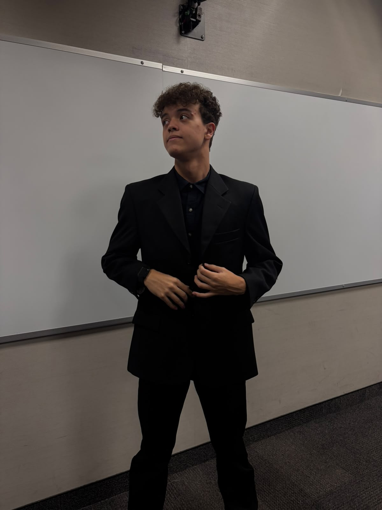
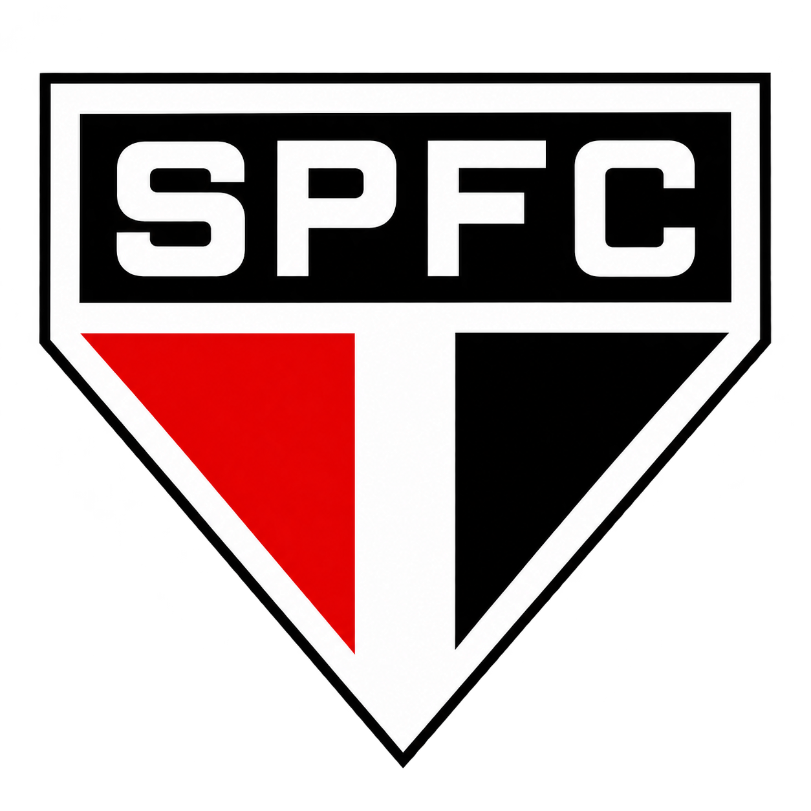

Vôlei
Gosto de jogar vôlei porque é um esporte dinâmico e que exige trabalho em equipe. Além de me divertir, gosto do desafio de melhorar e aprender jogando com outras pessoas.
Sou uma pessoa companheira, determinada e que gosta de aproveitar os bons momentos. Gosto de esportes, videogames, música e de estar perto das pessoas que são importantes para mim. Aqui conto um pouco mais sobre quem eu sou e o que gosto de fazer.
Conheça mais
Me considero uma pessoa companheira e determinada. Valorizo bastante as amizades, o respeito e a humildade. Gosto de ajudar quando posso, escutar opiniões diferentes e estar perto das pessoas de quem gosto.
Também sei que tenho coisas a melhorar, como tomar mais iniciativa em algumas situações. Procuro aprender com meus erros e evoluir aos poucos. No meu tempo livre, gosto de jogar vôlei, futebol e videogame, ouvir música e conhecer lugares novos.

Sou torcedor do São Paulo e gosto de acompanhar futebol. Torcer pelo Tricolor é mais uma forma de viver minha paixão pelo esporte.
Gosto de jogar vôlei porque é um esporte dinâmico e que exige trabalho em equipe. Além de me divertir, gosto do desafio de melhorar e aprender jogando com outras pessoas.
O futebol também é um esporte de que gosto muito. O Neymar é meu ídolo e foi uma das principais inspirações para eu querer praticar esportes. Gosto da criatividade dele em campo, e isso aumentou meu interesse pelo futebol.
Jogar videogame é uma das minhas formas favoritas de passar o tempo. Gosto tanto de jogos com boas histórias e exploração quanto dos competitivos, principalmente quando estou com meus amigos.
Moro na região do Jaraguá, em São Paulo. Gosto de como o bairro reúne a vida da cidade com lugares de natureza, como o Pico do Jaraguá.
O Neymar é meu ídolo desde que comecei a acompanhar futebol. Ver a criatividade e a habilidade dele jogando foi o que despertou em mim a vontade de praticar esportes, e não só assistir.
Com o tempo, o vôlei também virou parte dos meus interesses. Gosto da emoção das partidas, de jogar com outras pessoas e da sensação de melhorar a cada tentativa. Para mim, o esporte é uma forma de me divertir, superar desafios e criar boas lembranças.
Participo do VOLTA, um projeto que aproxima empresas e cooperativas para facilitar a reciclagem de resíduos plásticos. Gosto de fazer parte dessa ideia porque posso aprender, colaborar com outras pessoas e contribuir para algo útil.
Gosto de estar presente, ajudar quando posso e saber ouvir. Para mim, amizade e respeito fazem diferença nas relações.
Quando algo me interessa de verdade, procuro me dedicar e melhorar. Nem sempre é fácil, mas gosto da sensação de perceber minha evolução.
Sei que ainda tenho muito a aprender. Tento reconhecer quando erro, aceitar críticas e considerar opiniões diferentes das minhas.
Tenho vários planos para o futuro, mas o principal é continuar crescendo como pessoa, aproveitar as oportunidades e viver experiências que façam sentido para mim.
Quero viajar mais, conhecer culturas diferentes e visitar lugares como Japão, Itália e Alemanha. Acho que cada viagem pode ensinar algo novo.
Quero ter mais iniciativa, confiar nas minhas decisões e aprender a lidar melhor com os desafios, sem deixar de valorizar a humildade e o respeito.
Também quero continuar próximo das pessoas de quem gosto, aproveitar meus hobbies e construir lembranças especiais ao longo do caminho.
Gosto das músicas mais calmas da Laufey e da mistura de jazz com pop. É uma artista que escuto quando quero relaxar.
O Teto é um dos artistas que gosto de ouvir, principalmente pelo estilo de trap e pelas melodias que ficam na cabeça.
Gosto da energia das músicas do Bruno Mars, que misturam pop, funk e R&B. São músicas que sempre animam o ambiente.
Gosto do mundo misterioso de Hollow Knight, da exploração e dos desafios. É um jogo que prende minha atenção pelos detalhes.
Persona 3 Reload me chama a atenção pela história, pelos personagens e pelas batalhas estratégicas. Gosto de acompanhar a evolução da narrativa.
No Valorant, o que mais gosto é jogar em equipe e pensar em estratégias. Cada partida é diferente e a comunicação faz muita diferença.
Algumas coisas que ajudam a me conhecer melhor, além do que já contei por aqui.
Gosto de acompanhar e torcer pelo Tricolor.
Foi quem me inspirou a começar a praticar esportes.
Curto a competição e a estratégia em equipe.
Gosto de explorar mundos e acompanhar personagens.
Ouço estilos diferentes dependendo do momento.
Tenho curiosidade por outras culturas e lugares.
Uma viagem muito especial pelos parques, personagens e atrações. Gosto do clima e das experiências que esses lugares proporcionam.
DisneyGostei das paisagens de Florianópolis e do contato com o mar. É um lugar que combina cidade, praias e natureza.
FlorianópolisA Universal tem atrações inspiradas em filmes e histórias que conheço. Foi divertido ver esses universos de perto.
UniversalTenho vontade de conhecer o Japão pela cultura, pela tecnologia e pelos lugares que vejo em filmes e jogos.
JapãoQuero visitar a Itália para conhecer suas cidades históricas, sua arquitetura e experimentar mais da cultura local.
ItáliaA Alemanha é outro destino que me interessa pela história, pelas paisagens e pela arquitetura das cidades.
Alemanha